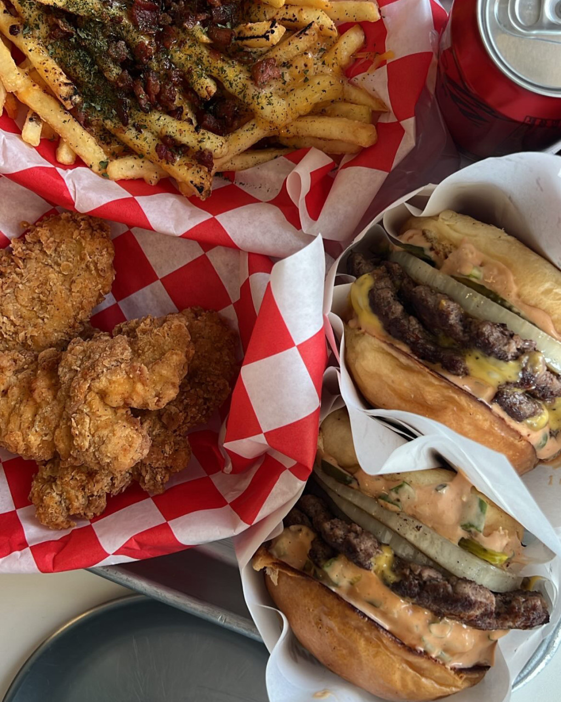

안녕하세요! 혹시 맛있는 수제버거를 찾고 계신가요? 그렇다면, 여러분의 입맛을 사로잡을 최고의 수제버거집 다섯 곳을 소개해드리겠습니다.
이곳들은 각각의 독특한 개성과 맛으로 수제버거의 진수를 선사합니다. 지금부터 하나씩 살펴보시죠!
✔️ 매장 정보를 바로 보고 싶다면?
첫번째로 소개할 곳은 괴정동 롯대백화점 뒷편에 있는 "투웨이버거 치폴레"입니다!
이 집은 제가 배달로 처음 먹어본 곳이었는데요! 첫 입을 먹고 완전 반해버렸던 곳입니다.
대표 메뉴로는 가장 기본적인 치폴레 버거, 베이컨과 치즈가 들어간 치폴레 베이컨 치즈, 치즈의 풍미가 있는 치폴레 치즈 등이 있습니다.
저는 항상 이 집 수제버거를 먹을 때 치폴레 베이컨 치즈를 먹는데 항상!!! 꼭!!! 같이 먹는 사이드 메뉴가 있습니다.
바로 ❗미트칠리 프라이❗입니다. 여기에 랜치 소스 뿌려 먹으면 진짜로 ,,, 그 곳이 천국입니다...
진짜 사진만 봐도 너무 먹고 싶네요... 가끔 수제버거 먹으러가면 수제버거라는 것때문에 가격을 엄청 비싸게 받는 곳이 있는데
이곳은 가격과 맛 모두 너무너무 훌륭한 집이었습니다! 괴정동 방문하실 일 있으시다면 이곳 "투웨이버거 치폴레" 적극 추천합니다❗🍔
✔️ 매장 정보를 바로 보고 싶다면?
두번째로 소개할 곳은 탄방동 남선 공원 쪽에 있는 "아메리칸 치즈버거"입니다!
이 곳은 인스타에서 보고 방문을 했던 곳이었는데요! 역시... 유명한 이유가 있었습니다!
패티, 치즈, 번, 양파, 소스, 피클만으로 구성된 녹진한 정통 치즈버거 본연의 맛을 추구하는 컨셉으로 구성이 된 곳으로 필요 하다면 야채 추가가 가능합니다!
일반 햄버거 빵이 아닌 제대로 만든 브리오슈번을 사용하여 좀 더 맛있게 먹을 수 있었어요!
패티 또한 최상의 상태로 당일에 만들어 최상의 퀄리티를 추구한다고 하셨는데 역시,,,ㅠㅠ 너무나도 맛있었습니다 ㅠㅠ

사진은 치킨텐더, 감자튀김, 아메리칸치즈버거[더블]입니다! 사진만 봐도 군침이 싹 도네요...
첫입을 먹는 순간 모든 재료가 너무나도 조화로와서 눈물 나는 맛입니다...
남선 공원 운동하고 여기가면 너무 행복할거 같은데 오늘 주말이 try~~~해볼까요~~~~~~?
✔️ 매장 정보를 바로 보고 싶다면?
마지막으로 소개할 곳은 탄방동 로데오타운 근처에 있는 "버기즈"입니다!
이 곳은 알바를 갈때마다 지나쳐가 궁금해서 방문했던 곳입니다!
내부, 외부 인테리어가 키치하고 힙해서 매우 감정이 넘쳤던 곳이었습니다!
그리고 아파트 근처여서 그랬던건지 40-50대 분들도 많이 드시고 계셨습니다!
대표 메뉴로는 갓파더, 아보카도, 행오버가 있습니다!
여기도 사진만 봐도 침이 나오네요... 침 좀 닦고.....
갓파더는 기본버거인데 엄청나게 맛있어요. 기본 중의 최고의 맛이랄까요 ...?
행오버는 해시브라운이 들어가있었어요! 해시브라운이 들어가 자칫 잘못하면 느끼할 수 있을거 같았는데 소스가 느끼함을 잡아주어서
느끼하지 않게 먹었습니다! 그리고 또 한입 먹었을때 노른자가 터져 주루룩 흐르는게 포인트랍니다 ㅋㅅㅋ
로데오타운 근처에 볼 일 보고 식사로 버기즈 어떠신가요?!
이렇게 해서 3곳의 수제버거 가게를 모두 소개해보았는데요! 이 3곳 모두 다 너무 맛있어서 다들 한번쯤 방문하여 드셔보시는 것을 강추드립니다!
그럼 저는 다음에 더욱더 퀄리티 높게, 맛있는 맛집들을 소개하는 게시물로 또 찾아 오겠습니다.
읽어주셔서 감사합니다! 좋은 하루 되세요! 🍀🐱